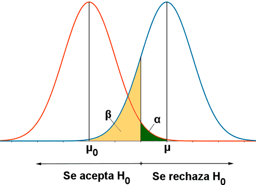

proportion power calculation for binomial distribution (arcsine transformation)
h = 0.219812
n = 127.9574
sig.level = 0.05
power = 0.8
alternative = greater1 Cálculo Muestral
¿Por qué es necesario una muestra?
- Para rechazar nuestra hipótesis nula no es necesario colectar toda la población (tiempo, dinero y recursos)
- Puede ser antiético.
Resumen de Funciones en pwr
| Test | Función |
|---|---|
| 1 muestra, 2 muestras independientes, 2 muestras pareadas (t-test) | pwr.t.test() |
| 2-muestras t-tests (unequal sample sizes) | pwr.t2n.test() |
| 2-muestras proportion test (unequal sample sizes) | pwr.2p2n.test() |
| 1-muestra, proporciones | pwr.p.test() |
| 2-muestras, proporciones | pwr.2p.test() |
| 2-muestras, proporciones(diferentes tamaños muestrales) | pwr.2p2n.test() |
| one-way balanced ANOVA | pwr.anova.test() |
| Prueba de Correlación | pwr.r.test() |
| Chi-cuadrado (Bonda de Ajuste y Asociación) | pwr.chisq.test() |
| Modelo Lineal Generalizado | pwr.f2.test() |
1.1 1. Muestra para Proporciones (1 grupo): Estudios transversales (prevalencias, encuestas)
- Caso 1: La prevalencia de infección por Strongyloides es del 12% en el Perú, sin embargo, un estudio tiene como hipótesis que la prevalencia de Strongyloides en regiones rurales es mayor al 20%. ¿Cuántas personas de zonas rurales se necesitan para demostrar la hipótesis?
Análisis
- Hipótesis nula: La prevalencia de infección por Strongyloides es 12%.
- Hipótesis alterna: La prevalencia de infección por Strongyloides en zonas rurales es 20%.
Nivel de Significancia y Poder (sig.level, power)

Sí solo evaluamos un incremento o disminución, se puede utilizar solo a una cola (alfa).
1.2 2. Muestra para Proporciones (2 grupos): Estudios analíticos
En un estudio queremos comparar la frecuencia de hipersomnio en alumnos con o sin uso de redes sociales mayor a 6horas al día. Se estima que la frecuencia de insomnio en alumnos con uso de redes sociales mayor a 6h es de 30%, mientras que en alumnos sin uso de redes sociales es del 10% (basado en una Tesis de la universidad). ¿Cuántos alumnos se necesitan por grupo?
Análisis
- Hipótesis nula: La frecuencia de alumnos con insomnio no es mayor (o <20%) entre los que usan redes sociales por más de 6h.
- Hipótesis alterna: La frecuencia de alumnos con insomnio es mayor (o <20%) entre los que usan redes sociales por más de 6h.
Difference of proportion power calculation for binomial distribution (arcsine transformation)
h = 0.5157784
n = 59.00793
sig.level = 0.05
power = 0.8
alternative = two.sided
NOTE: same sample sizes
difference of proportion power calculation for binomial distribution (arcsine transformation)
h = 0.5157784
n1 = 80
n2 = 46.74262
sig.level = 0.05
power = 0.8
alternative = two.sided
NOTE: different sample sizes1.3 3. EpiR para el cálculo muestral
Otra forma más rápida de calcular el tamaño muestral es usando EpiR
1.3.1 3.1 Estudios de Prevalencia
Por ejemplo: Se desea determinar la prevalencia por Dengue en Ica. La prevalencia en Perú es de 15% durante el 2025. ¿Cuántas personas deben ser evaluadas en Ica para tener 95% de certeza que la estimación estrá dentro del margen del +-20% del valor real del Perú? (En otras palabras entre el 12 al 18%)
Muestra para prevalencias
- Sin conocer la población.
- Si sabemos que la población de la comunidad a evaluar es 5,000 habitantes (corrección finita)
1.3.2 3.2 Estudios analíticos
Muestra para Cohortes Prospectivas
Se desea evaluar el impacto del uso nocturno de dispositivos electrónicos en el rendimiento académico. Los alumnos tendrán una evaluación basal y serán divididos en 2 grupos: 1) alumnos con uso de dispositivos electrónicos previo a dormir; 2) alumnos sin uso de dispositivos electrónicos previo a dormir. Se desea tener un 80% certeza de poder detectar un incremento de 1.5 veces el rendimiento académico malo con un nivel de confiabilidad del 0.05. Una tesis previa estimó la incidencia de rendimiento académico malo fue 20/100 .
1.4 Muestra para Casos y Controles
Se desea evaluar evaluar la relación entre el consumo de marihuana y la depresión en estudiantes universitarios. Se comparará un grupo de alumnos diagnósticados con depresión y un grupo control de alumnos de la misma universidad. ¿Cuántos alumnos son necesarios para detectar un odds ratio (incremento) de 2, con una certeza del 80% de encontrar dicho incremento (poder), y nivel de confiabilidad de 0.05? Estudios previos determinaron que el consumo de marihuana es del 10% en estudiantes.
Note
1.4.1 3.3 Estudios Experimentales
1.5 Muestra para estudios de no inferioridad
Se desea evaluar evaluar la eficacia de dos medicamentos para el tratamiento de la hipertensión. Asumiendo que la eficacia del medicamento A es del 85%, mientras que el medicamento B es del 65%. Se considera que una diferencia menor del 10% no es clínicamente relevante. Asumiendo un nivel de confiabilidad a una cola del 5% (0.05) y poder del 80%, ¿Cuántos pacientes se necesitan incluir en este estudio?
Note
1.6 Estimación de un parámetro poblacional (one-stage cluster sampling)
Se desea conocer la prevalencia real de HTLV-1 en zonas rurales de Ica. Se realizará un estudio transversal, donde todas los comunidades del departamento de Ica serán muestreados. Todas las familias dentro de cada comunidad serán muestreados (120 personas por comunidad). Un estudio previo determino que el coeficiente intracluster de correlación es del 0.2 (intracluster correlation coefficient). Si se desea saber con 95% de confiabilidad que el tamizaje estime la prevalencia real dentro del margen del 10% del valor real de la población. ¿Cuantas comunidades se necesitan muestrear? Un estudio previo mostro prevalencia del 15%.
Note
1.7 Estimación de un parámetro poblacional (two-stage cluster sampling)
Tenemos data jerarquica (Ica tiene comunidades[1º] e individuos[2º]). Prevalencia de HTLV-1 está estimada entre 3-5%. Coeficiente de correlación intracluster es de 0.02, nivel de confiabilidad del 95%, estimación de la prevalencia entre el 5% del valor real de la población y 20 individuos por comunidad.
Note
Note